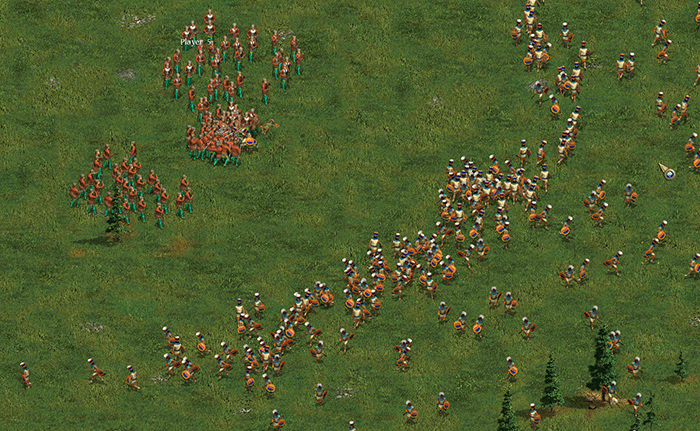
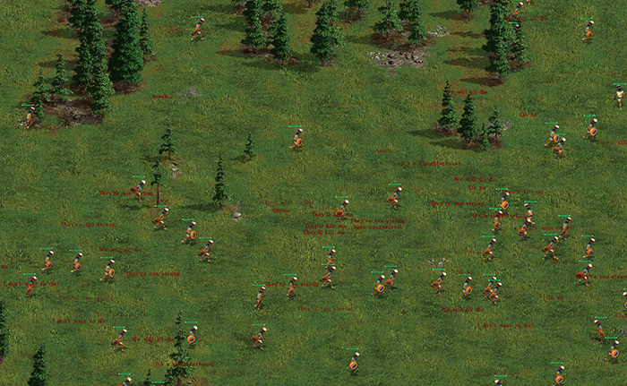
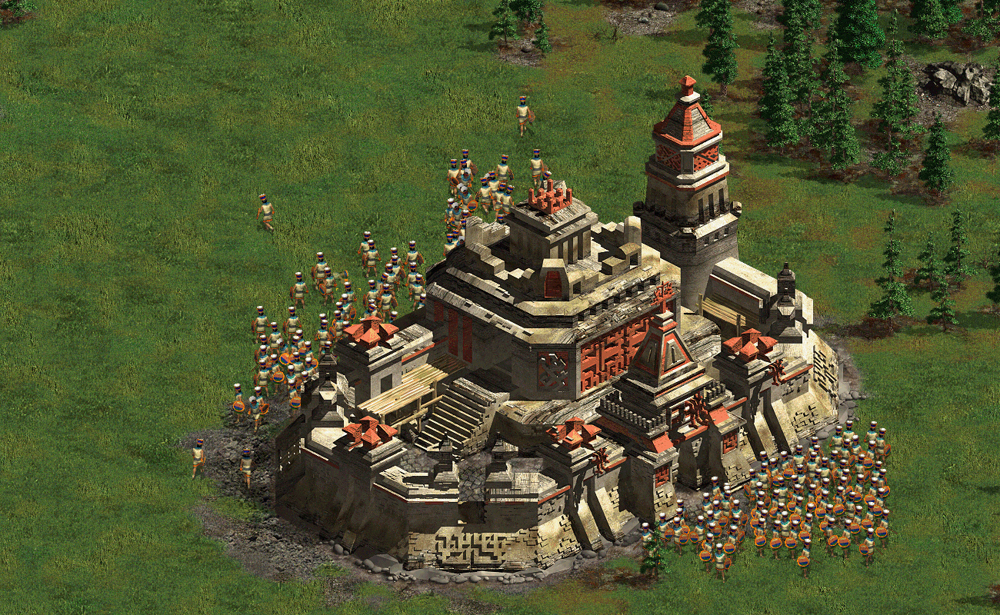
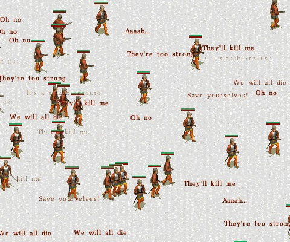
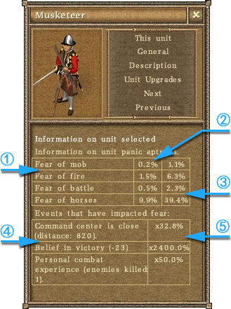

第四章 高级战术指导
4.1 士气系统

在真正的战场上，士气是很重要的因素，有很多士气高的军队以少胜多的实例。在游戏里，士气是这款游戏中最独特的部分之一，士气会对你的军队带来极大的影响。士兵的士气会根据很多因素而变化，例如被围攻或远离己方基地。
提高士气的因素
◆ 消灭大量敌军；
◆ 看到敌军溃逃；
◆ 在己方或盟友的堡垒或兵营附近战斗；
◆ 组成编队；
◆ 在编队中受有经验的军官指挥；
◆ 有军官、鼓手、执旗手、首领或祭司在附近；
降低士气的因素
◆ 周边友军被击毙；
◆ 受到火枪攻击；
◆ 受到骑兵攻击；
◆ 侧翼或后方受到袭击；
◆ 看到友军溃逃；
◆ 附近己方的堡垒或兵营被摧毁；
◆ 食物、黄金短缺；
◆ 编队中的军官、旗手、鼓手、首领或祭司被击毙；
◆ 地形恶劣；
溃逃
游戏中，大部分单位都有不同的士气参数（即恐惧值），士气会随着作战行动而变化。一些例如军官、旗手、首领、战舰等军事单位不会受到士气影响，本章节不做讨论。如果军事单位的士气太低，士兵会从战场上溃逃。溃逃的士兵不会再受控制，只会四散逃窜，因此也很容易被敌军消灭。溃逃的士兵会慢慢像己方的堡垒、堡垒要塞、兵营等建筑移动，并最终恢复为可操作状态，并集结在这些建筑旁边。有少量溃逃的士兵会在溃逃途中就恢复可控制状态。

▲ 一队玛雅执棒兵（右侧）攻击一队火绳枪兵（左上角），尚未近身就已经溃逃大半；

▲ 溃逃途中的玛雅执棒兵，此时不受控制；

▲ 慢慢聚集在堡垒附近，并且恢复受控状态。
在打开生命值显示模式（通过键盘上的`或Tab 键），士兵溃逃时，头顶上就冒出一些文字，表示士兵正在呼救呐喊。己方士兵溃逃时显示的是红色文字，敌方士兵显示白色文字。他们喊的话有：
● Oh no
—— 哦 不
● Aaaah...
—— 啊...
● We will all die
—— 我们都会死的
● They're too strong
—— 他们太强了
● They'll kill me
—— 他们会杀死我的
● Save yoursalves!
—— 拯救你自己！
● It's a alaughterhouse
—— 这是一个屠宰场
● I don't want to die!
—— 我不想死！

士气信息的显示
士气的多少一般由恐惧值来体现。恐惧值是以百分比显示的，百分比越高，恐惧值则越高，就越有可能发生溃逃。恐惧值的百分比越低，则说明士气高昂，溃逃的概率很小。
恐惧类型：在单位信息窗口中（可通过快捷键 U 打开），一般会显示4种不同的恐惧属性。
◆ 对逃兵的恐惧
受到交战时周边溃逃友军的数量影响
◆ 对火枪的恐惧
受到交战时敌军火枪开枪次数的影响
◆ 对阵亡人数的恐惧
受到交战时周边阵亡的友军数量影响
◆ 对骑兵的恐惧
受到交战时周边敌军骑兵数量的影响
单位信息窗口恐惧值一般会有如下信息：

① 4 种不同的恐惧类型（有些兵种可能只有2、3种恐惧）；
② 恐惧值的初始值；
③ 目前的恐惧值；
④ 影响士气的因素；
⑤ 影响士气因素的各个数值。虽然也是百分比数字表示与②、③ 不同，数值小于100%，表示恐惧减少，数值大于100%，表示恐惧增加。
注：③和⑤的数值是及时的，随着士兵和敌军活动以及周边环境影响而变化。
一些士兵（如骑兵）士气很高，恐惧值低，一些士兵（如军官、猎人、祭司）不会受到恐惧的影响，一些士兵（如步兵、美洲原住民军队）士气很低，很容易溃逃。合理利用这些兵种的不同属性，在作战中利用冲锋、齐射等操作将士兵效率最大化，是非常重要的。杀死敌人后，会根据杀人数量增加近战攻击力。
| 影响士气的因素 |
详细介绍 |
个人作战经历 |
一个单位杀死的敌人越多，就越不害怕。 |
不久前有一场饥荒 |
饥饿的战士必定无法好好作战。 |
指挥中心（堡垒、军营）被摧毁 |
被拆毁的堡垒或军营降低了士兵的士气。 |
编队中军官死亡 |
军队因为没有一个好的指挥官而感到无奈。 |
编队中鼓手死亡 |
鼓手不仅可以提高士气，还能通过鼓点下达指令 |
失去荣誉 |
军队的荣誉已经被践踏——他们不能忍受耻辱。 |
死亡人数过多 |
没有人想死，如果失败是不可避免的，士兵会溃逃。 |
指挥官的经验 |
编队的士兵很依赖他们的领导者。 |
编队的经验 |
编队的杀敌数量会影响士气。 |
感受队友 |
编队中人数越多，士气就越高。 |
胜利的信仰 |
当附近一个友军杀死敌人时，信仰增加1，如果敌人在附近杀死一友军，则减少1。 |
接近指挥中心 |
离大本营很近，没有任何撤退的余地。 |
叛变
一些士兵需要黄金来维持，当黄金不足时，燧发枪兵、骑兵17C和战舰会叛变。即这些军队变成不受控制的状态，并且可能反过来攻击己方。在小地图上，这些士兵显示为咖啡色。英国的燧发枪兵不会叛变。